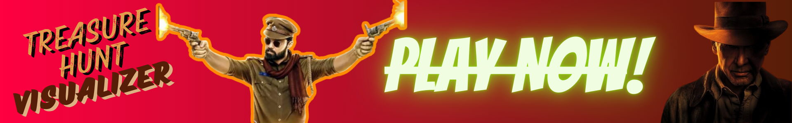
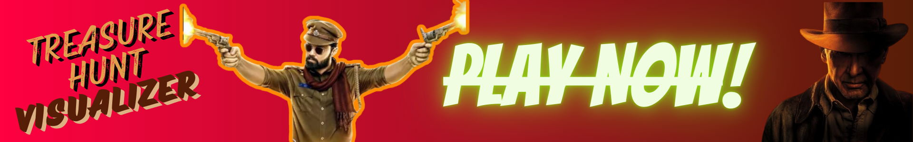

Home Section - Introduction to Treasure Hunt Visualizer
What is Treasure Hunt Visualizer
Treasure Hunt Visualizer is an interactive algorithm demonstration tool designed to help players and learners understand searching and sorting algorithms through engaging visualizations. By selecting a set of wooden boxes filled with different treasures (gold, platinum, or rock), users can experience firsthand how algorithms work to locate the hidden gold box efficiently
How It Works
- Users select the number of wooden boxes they want to play with.
- They choose to fill the boxes with gold, platinum, or rock.
- Using powerful sorting and searching algorithms (like Merge Sort, Linear Search, and Binary Search), the tool visualizes the process of identifying the gold box with optimized efficiency.
- Through animations and step-by-step explanations, users gain insight into how these algorithms process data and improve searching techniques.
Visualizer Section – The Interactive Experience
How Visualization Helps
This section is where users can experience the treasure-finding process through engaging animations and real-time computation.
Key Features:
- Box Placement: Users define how many wooden boxes will be used.
- Treasure Selection: Each box is assigned either Gold, Platinum, or Rock.
- Sorting Process: The tool uses Merge Sort to arrange boxes based on weight.
- Searching Mechanism: Linear Search: Moves sequentially through boxes, checking each one. Binary Search: Efficiently divides the search space to quickly locate the gold box.
- Final Discovery: The visualization highlights how the search algorithm leads to the gold box.
Users can watch the process unfold step by step, with animations that illustrate how the algorithms navigate through the data.
Visit Visualization Page →Reference Section – Step-by-Step Guide & Algorithms Used
How to Use the Visualizer
- Click "Play" – Start the interactive treasure hunt process.
- Select Number of Boxes – Define the number of wooden containers.
- Fill Boxes – Assign treasures inside each box.
- Sorting Stage – Watch how Merge Sort arranges the boxes based on weight.
- Search Stage – Choose between: Linear Search: Step-by-step sequential checking. Binary Search: Optimized search for faster results.
- Gold Discovery – The algorithm highlights the treasure box with the gold.
Algorithms Used in Treasure Hunt Visualizer
- Merge Sort: Efficiently organizes boxes by weight before searching begins.
- Linear Search: Searches one box at a time until gold is found.
- Binary Search: Quickly finds the gold box by halving the search space.
Each algorithm is demonstrated visually so users can understand its effectiveness and complexity.
Visit Reference Page →About Section – Project Overview
Project Vision
Treasure Hunt Visualizer is a gamified algorithm learning tool aimed at making sorting and searching algorithms intuitive and engaging for beginners and enthusiasts. By transforming traditional algorithm analysis into an interactive treasure-hunting experience, the website helps users develop a deeper understanding of computational problem-solving.
Development Approach
- Frontend: HTML, CSS, JavaScript for interactive UI.
- Visualization: CSS animations and JavaScript logic.
- Algorithms: Implemented using JavaScript for real-time demonstrations.
Who Can Use It?
- Students & Learners: Those wanting a hands-on approach to algorithms.
- Gamers & Puzzle Enthusiasts: Individuals who enjoy logic-based challenges.
- Educators & Instructors: Teachers looking for a fun visualization tool for algorithm-based learning.
 
